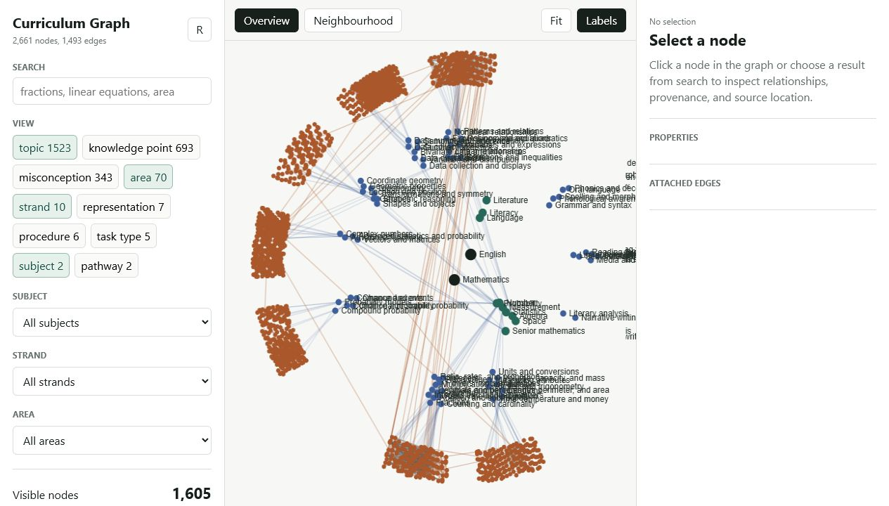

Adelaide, South Australia
Software for problems that need more than a tidy demo.
I’m Lachlan Bridges, a software developer and applied mathematician.
I build dependable tools for research, data and automation—mostly in
Python, TypeScript and Go.
Build
Research
Data
Systems
Maths
Selected work
Tools with a reason to exist.
These projects grew from concrete problems: keeping mathematical work
inspectable, modelling a curriculum, reorganising immutable data, and
recovering information from a changing backup format.

Research infrastructure
Early alpha
A self-hosted workspace for mathematical research. Markdown remains
the source of truth while a typed claim graph, review queues, an MCP
interface and a Lean worker add structure around it.

Knowledge modelling
2,661 nodes
A readable YAML ontology with validation, graph analysis, an MCP
server and a browser explorer. It makes prerequisites, knowledge
points and curriculum gaps inspectable instead of burying them in a spreadsheet.
01
Linux filesystem
A Go/FUSE experiment for presenting alternate, persistent directory
layouts without moving or modifying the source data.
02
Data recovery
A selective HTML, Markdown and JSON exporter for Signal Android’s
newer folder-based encrypted backups, tested against a large personal archive.
03
Document tooling
A small Model Context Protocol server that compiles trusted LaTeX
documents, caches PDFs, and exposes reusable templates and snippets.
04
Applied mathematics
Markov-modulated models for intermittent animal-search strategies,
bringing several foraging models into a common stochastic framework.
Background
Research habits, applied to software.
I came to software through applied mathematics and university research.
Since then I’ve built independent and collaborative systems for quantitative
work, education, data recovery and self-hosted research.
I care about clear boundaries, reproducible behaviour and tools that remain
understandable after the first demo. I document status and limitations alongside
the working parts; knowing where a system stops is part of understanding it.
2019–2021
Graduate Research Assistant
Research software, mathematical modelling and analysis.
2017–2021
University Tutor
Mathematics and statistics teaching at the University of Adelaide.
2017–2019
Master of Philosophy
Applied Mathematics, University of Adelaide.
2014–2016
Bachelor of Mathematical Sciences
Applied Mathematics and Statistics, University of Adelaide.